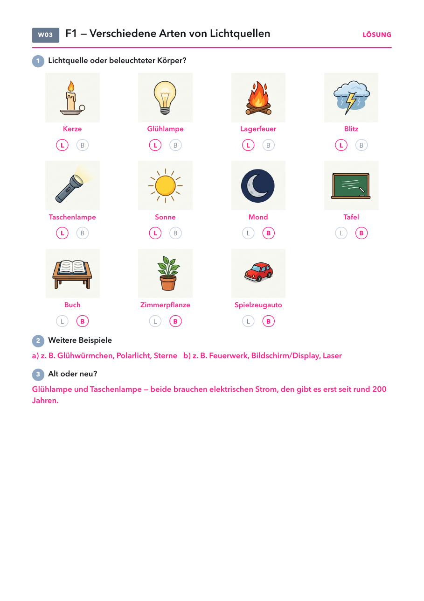
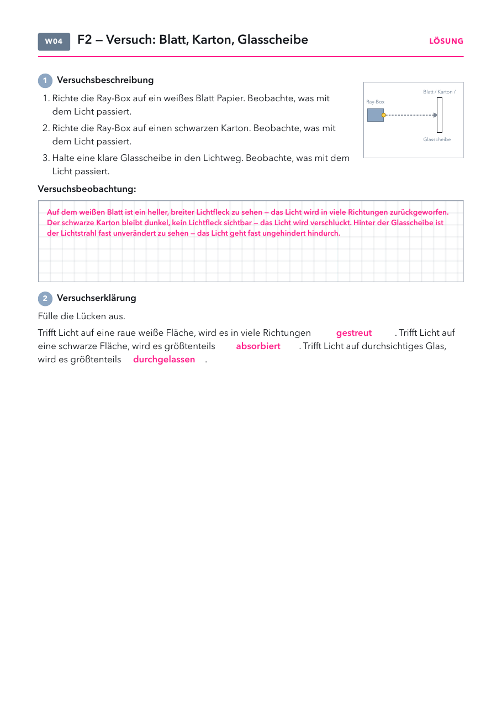

- Arbeitsblatt Lichtquellen: Seite 1, eins pro Schüler.
- Versuchsblatt: Kopiervorlage „2 auf 1“, halbe Klassenstärke drucken und in der Mitte durchschneiden.
- Folien und Lösungen: nicht drucken.
Material
Demo (für dich)
| Material | Anzahl | Hinweis |
|---|---|---|
| nicht nötig | ||
Schülerversuch (pro Gruppe)
| Material | Anzahl | Hinweis |
|---|---|---|
| Ray-Box mit Stromanschluss | 1× | Versuch Folie 10 |
| weißes Blatt Papier | 1× | |
| schwarzer oder dunkler Karton | 1× | dunkelblau, dunkelgrün oder Tonpapier gehen auch |
| klare Glasscheibe | 1× | Kanten abkleben; Geodreieck geht auch |
Die Stunde
Kurz wiederholen, Arbeitsblatt, dann natürlich und künstlich, sehen und gesehen werden.
Antwort, Handzeichen, Lösung.
Dieselbe Lampe, drei Gegenstände. Vermutungen sammeln.
Blatt, Karton, Glasscheibe in Gruppen, Versuchsblatt.
Vier Situationen zeichnen, Alltag mündlich, Antwort auf Leitfrage 2 ins Heft.
Handzeichen, Lösung.
2. Lichtquellen und beleuchtete Körper

Natürliche und künstliche Lichtquellen
Sehen und gesehen werden
Warum sehen wir überhaupt etwas?
Check zu Leitfrage 1
1) Warum kannst du dein Physikheft sehen?
- Weil das Heft selbst Licht aussendet.
- Weil Licht vom Heft in dein Auge gelangt.
- Weil deine Augen Licht aussenden.
- Weil das Heft hell ist.
2) Welcher Körper ist eine Lichtquelle?
- Der Mond
- Ein Spiegel
- Eine brennende Kerze
- Eine weiße Wand
Lösung
Beobachte
Was passiert mit dem Licht, wenn es auf einen Körper trifft?


3. Licht trifft auf einen Körper
Licht trifft auf einen Körper im Alltag
| im Alltag | was passiert | warum |
|---|---|---|
| schwarzes T-Shirt in der Sonne | Absorption | fast alles Licht wird verschluckt, das Shirt wird warm |
| weiße Wand | Streuung | Licht geht in alle Richtungen, die Wand ist von überall zu sehen |
| Fensterscheibe | Transmission | Licht geht (fast) ungehindert hindurch |
| Milchglas (Badfenster) | Transmission und Streuung | hell, aber man erkennt nur Umrisse |
| Sonnenbrille | Absorption und Transmission | ein Teil wird verschluckt, der Rest geht hindurch |
Was passiert mit dem Licht, wenn es auf einen Körper trifft?
Check zu Leitfrage 2
1) Ein schwarzes T-Shirt sieht schwarz aus. Was passiert dort mit dem Licht?
- Es wird fast vollständig verschluckt.
- Es geht vollständig hindurch.
- Es wird vollständig zurückgeworfen.
- Es wird verstärkt.
2) Durch eine Fensterscheibe kannst du hindurchsehen. Wie heißt das?
- Absorption
- Emission
- Transmission
- Streuung
Lösung
Warum leuchtet etwas?
- Heiße Körper glühen: Sonne (Oberfläche etwa 5500 °C), Glühdraht (etwa 2500 °C), Kerzenflamme (bis etwa 1400 °C). Je heißer, desto heller und weißer.
- Kalte Lichtquellen: LED und Bildschirm erzeugen Licht elektrisch, ohne heiß zu werden. Das Glühwürmchen erzeugt Licht mit einer chemischen Reaktion im Körper (Biolumineszenz).
- Mond: Er wirft nur etwa ein Achtel des Sonnenlichts zurück. Er wirkt hell, weil der Nachthimmel dunkel ist.
- Sterne und Planeten: Sterne sind ferne Sonnen, also Lichtquellen. Planeten leuchten nicht selbst. Der „Abendstern“ ist die Venus, also ein beleuchteter Körper.
- Typische Fehlvorstellungen: Was hell ist, sei eine Lichtquelle (Mond, weiße Wand, Spiegel). Katzenaugen und Rückstrahler „leuchten“.
Sehen und gesehen werden
- Rückstrahler werfen das Licht genau in die Richtung zurück, aus der es kommt. Deshalb sieht gerade der Autofahrer sie hell aufleuchten, ein Fußgänger daneben kaum.
- Richtwerte bei Abblendlicht: dunkle Kleidung ist erst auf etwa 25 m zu sehen, helle auf etwa 40 m, mit Reflektoren auf etwa 140 m. Die Zahlen werden von Verkehrssicherheitsverbänden genannt und schwanken je nach Quelle.
- Guter Gesprächsanlass: Wer von euch hat Reflektoren an Jacke oder Ranzen?
Tipps zum Versuch
- Raum abdunkeln, sonst ist der Unterschied zwischen Blatt und Karton schwer zu sehen.
- Ray-Box mit einem schmalen Spalt, flach auf den Tisch. Blatt und Karton senkrecht aufstellen.
- Blatt: Den Lichtfleck von links, rechts und von oben anschauen lassen. Er ist von überall zu sehen, das ist Streuung.
- Karton: Ganz dunkel wird der Fleck nicht. Auch schwarzer Karton streut einige Prozent des Lichts zurück, sonst könnte man ihn gar nicht sehen. Deshalb heißt es im Lückentext „größtenteils absorbiert“. Nach einer Minute die Hand auflegen lassen: Er wird warm, das absorbierte Licht ist nicht „weg“.
- Glasscheibe: Neben dem Lichtfleck dahinter ist auch ein schwaches Spiegelbild zu sehen. Das zeigt: Meist passiert mehreres gleichzeitig. Kanten der Scheibe abkleben.
Licht trifft auf einen Körper
- Streuung ist eine ungeordnete Reflexion an einer rauen Oberfläche. Die regelmäßige Reflexion am Spiegel kommt später (Leitfrage 6).
- Farben: Ein roter Apfel absorbiert fast alle Farben des Lichts und streut vor allem Rot zurück. Weiß streut alle Farben, Schwarz absorbiert fast alle.
- Typische Fehlvorstellungen: Das Licht „bleibt“ auf dem Gegenstand liegen. Schwarz werfe „schwarzes Licht“ zurück. Beim Glas „verschwindet“ das Licht.
Ideen aus Erlebnis Physik 7–9
| Seite | Idee und so geht's | Passt zu |
|---|---|---|
| S. 26–29 | Licht als Signal. Ampel, leuchtendes Hundehalsband, Leuchtturm: Die Lichtquelle ist der Sender, das Auge der Empfänger. Die Fernbedienung sendet unsichtbares Infrarotlicht, das man mit der Handykamera sichtbar machen kann. | Leitfrage 1 |
| S. 45 A | Glatte und zerknitterte Alufolie. Beide im dunklen Raum mit der Taschenlampe schräg anleuchten. Die glatte wirft einen hellen Fleck in eine Richtung (Spiegelung), die zerknitterte leuchtet von überall schwach (Streuung). Material: Alufolie, Taschenlampe. | Leitfrage 2 (Zusatz), Leitfrage 6 |
| S. 33 A | Teelicht durch einen Gummischlauch. Durch den geraden Schlauch (etwa 15 cm) sieht man die Flamme, durch den gebogenen nicht. Licht breitet sich geradlinig aus. Material: Teelicht, Feuerzeug, Gummischlauch. | Leitfrage 3 |
| S. 33 B | Lichtwege sichtbar machen. Kleine Löcher in Alufolie stechen, damit die Handylampe abdecken, Raum abdunkeln. Ein ausgepustetes Teelicht gibt Rauch, in dem die geraden Lichtwege sichtbar werden. Material: Alufolie, Bleistift, Smartphone, Teelicht. | Leitfrage 3 |
| S. 36–37 | Schattenversuche. Taschenlampe und Radiergummi auf gefaltetem Papier (Schattenbild, Je-desto-Satz). Zwei Taschenlampen auf einen Mitschüler an der Wand: Wann gibt es zwei Schatten, wann nur einen? Der dritte Versuch entspricht deinem Ray-Box-Versuch. | Leitfrage 4 |
| S. 40 | Globus und Lampe. Deutschland und Japan mit Knete markieren, den Globus drehen: Tag und Nacht. Eine Papierkugel am Faden kreist als Mond um den Globus: Mondphasen. | Leitfrage 5 |
| S. 48–49 | Lerncheck mit 25 Aufgaben, gut als Aufgabenpool vor der Klassenarbeit. | Wiederholung |
Arbeitsblatt Lichtquellen
PDF öffnenLösung: Lichtquelle (L): Kerze, Glühlampe, Lagerfeuer, Blitz, Taschenlampe, Sonne. Beleuchtet (B): Mond, Tafel, Buch, Zimmerpflanze, Spielzeugauto. Aufgabe 2: z. B. Glühwürmchen, Polarlicht, Sterne / Feuerwerk, Bildschirm, Laser. Aufgabe 3: Glühlampe und Taschenlampe.
Versuchsblatt Licht trifft auf einen Körper
PDF öffnenKopiervorlage 2 auf 1Lösung: Weißes Blatt: heller, breiter Lichtfleck, Licht wird in viele Richtungen zurückgeworfen (gestreut). Schwarzer Karton: nur ein schwacher Lichtfleck, das meiste Licht wird absorbiert. Glasscheibe: Strahl dahinter fast unverändert, Licht wird durchgelassen (Transmission).
Sehlabor und Körperlabor
SehlaborKörperlaborAlle LaboreSehlabor: Sender und Empfänger, Lichtquellen zuordnen, Sehen und gesehen werden auf der Straße. Körperlabor: weitere Körper wie Butterbrotpapier oder Sonnenbrille, dazu die Aufteilung in Streuung, Absorption und Transmission. Beide sind auch für zu Hause geeignet.